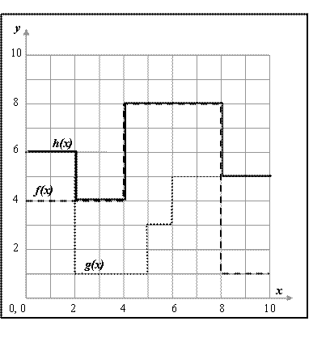

Let f(x) and g(x) be two functions defined in the same domain [a,b]. The horizon line corresponds to the function that presents, in each point x, the maximum value from both original functions: h(x)=Max(f, g).

Figure 1 - Construction of a horizon function
The maximum value of h(x) can be directly obtained from the both functions maxima, so it wouldn't make it necessary to determine the horizon line. Nevertheless, the same is not true for the minimum value of h(x) that has to be evaluated through a more complex method.
Your task for this problem is to evaluate the minimum value of a horizon line h(x), given two functions f(x) and g(x). To make it easier, both initial functions are composed by different steps like the dotted lines represented in figure 1, but x and y values are not necessarily integer values. Each function is composed by a sequence of N steps, with each step being defined by a length and a value. It is ensured that the last step ends at the domain upper limit and the domain is always [0,10].
The input is made of two sequences of text lines, representing the functions f and g.
In each sequence, the first line contains the number of the function steps N (integer format); it is followed by N lines containing, each one, the step value and the step length (by this order, in decimal format) separated by one or more spaces. It is ensured that a sequence has no more than 100 steps.
For each test case, the output is made of one text line containing the minimum value of the horizon line h(x). It must be rounded to three decimal digits.
4 6.0 2.0 1.0 3.0 3.0 1.0 5.0 4.0 3 4.0 4.0 8.0 4.0 1.0 2.0
4.000
2006 Programming Contest of Porto University
Round 3, 11th of October of 2006
(Author: Augusto Sousa - FEUP)